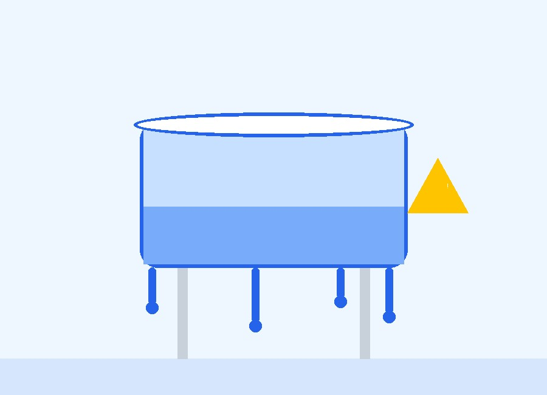
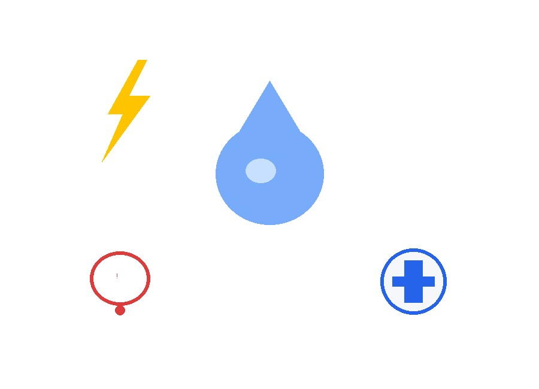
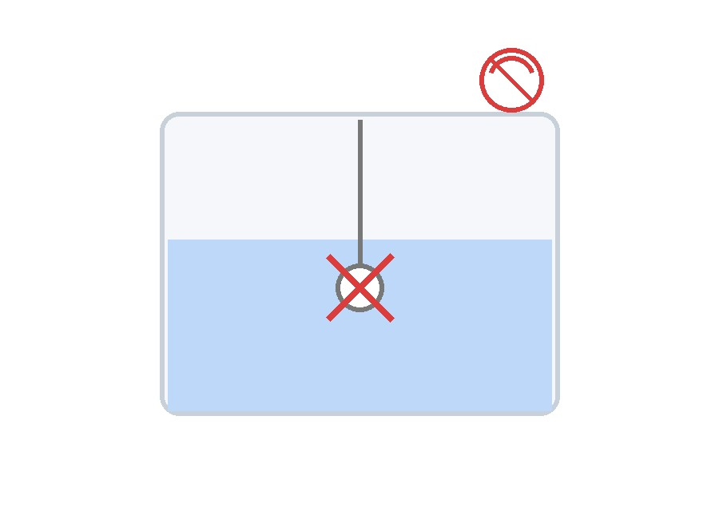
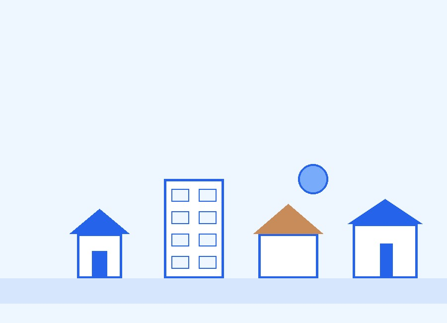
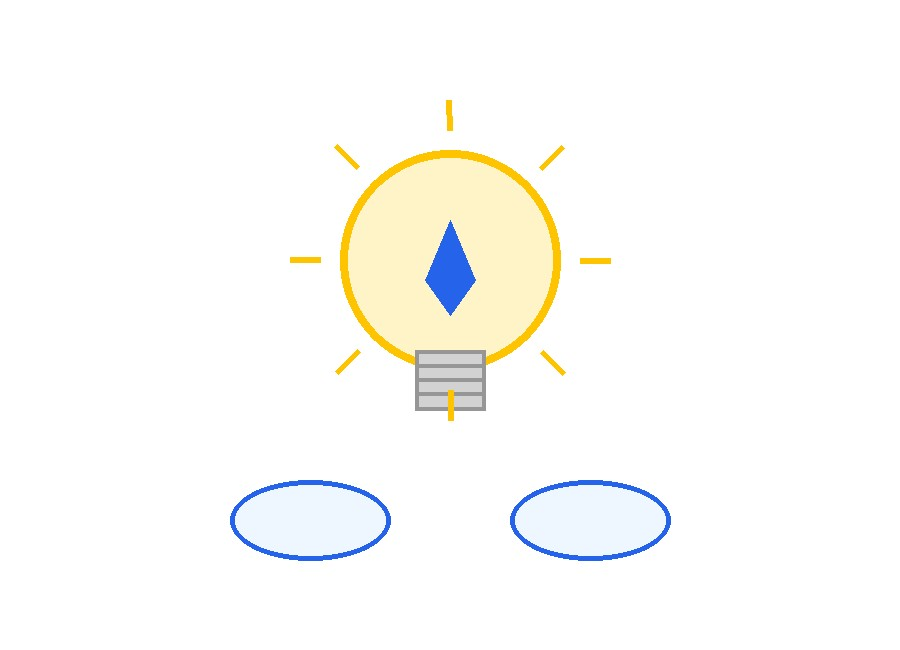

The Water Crisis Starts at Home
Most homes waste water every single day because there is no way to monitor tanks, pumps and water levels in real time — leading to silent overflow, dry taps and wasted electricity.
Learn More
Invisible Water Loss
Every day, thousands of liters overflow silently from rooftop tanks because no one is watching the level in real time. Pumps are switched on and forgotten, running for hours after the tank is already full — wasting both water and electricity. Without a monitoring system, this loss stays invisible: no alert tells you the tank overflowed at 3 AM, no reading tells you the motor ran for six extra hours. Over a month, this hidden waste adds up to money down the drain — literally — while the water crisis outside your home grows worse. The problem isn't a lack of water; it's a lack of visibility.

Water Drop
Tanks overflow unnoticed, wasting hundreds of liters daily.
Electricity
Pumps keep running long after tanks are full.
Pump
Motors are left ON due to human forgetfulness.
Alert
No notification ever reaches you when it matters.
Daily Challenges
Homeowners are often away — at work, traveling, or simply asleep — with no way to know how much water is left or whether the tank is about to overflow. Manual checking means climbing to the rooftop just to peek inside a tank, again and again. At night, overflow goes unnoticed until morning. During the day, a sudden shortage means no warning before the taps run dry. And more often than not, someone forgets to switch off the motor — or forgets to switch it on when the tank runs empty.
- ✔ People are away from home for long hours
- ✔ No way to monitor water level remotely
- ✔ Manual rooftop checking is tiring and unsafe
- ✔ Overflow often happens at night, unnoticed
- ✔ Sudden water shortage catches everyone off guard
- ✔ Motor operation is frequently missed or forgotten
Why Traditional Systems Fail
Float switches, manual dipsticks and physical inspections were never built for the way people actually live today. They fail quietly, offer no remote access, and leave homeowners guessing.
Float Switches Fail
Mechanical floats jam, corrode or stop working over time.
Manual Inspection
Requires physically climbing up to check tank levels.
No Remote Monitoring
Impossible to check water status from outside the home.
No Notifications
No alerts for overflow, shortage, or pump failure.
No Battery Backup
Systems stop working completely during power cuts.
No Cloud Storage
No historical data to track usage or spot patterns.

Real Impact
30%
Water Wasted
50+
Hours Lost
24x7
Monitoring Needed
100%
Manual Dependence

Who Faces This Problem?
This isn't limited to one type of home — it affects nearly every kind of property that relies on stored water.
Home Owners
Struggle with overflow and shortage without any warning.
Apartments
Shared tanks make manual monitoring even harder.
Farm Houses
Remote locations mean checks are rare and unreliable.
Schools
Large tanks need constant supervision that staff can't provide.
Factories
Production depends on water supply that must never run dry.
Our Motivation
This project began with a simple, frustrating experience: watching water overflow from a rooftop tank while the pump kept running unnoticed. It wasn't a one-time mistake — it was a recurring problem faced by nearly every household we spoke to. People wanted a simple way to know their tank's water level without climbing stairs, without guessing, and without wasting electricity on a forgotten motor. We realized that water scarcity isn't always about the lack of water — it's often about the lack of awareness. That's why we set out to build a Smart Water Monitoring System: to give every home, apartment, farm, school and factory real-time visibility and control over their water, so that not a single drop goes to waste again.

From Problem to Solution
Identifying the Problem
Observed repeated tank overflow and pump wastage in daily life.
Talking to Real Users
Spoke with homeowners, apartment residents and farm owners about the issue.
Researching Existing Systems
Studied float switches and manual methods — and found their limits.
Designing the Solution
Planned a real-time, remote, notification-driven monitoring system.
Building Smart Water Monitoring
Turned the idea into a working system to end invisible water loss.